가스기사 (2019-04-27 기출문제)
1과목: 가스유체역학
1. 기체수송에 사용되는 기계들이 줄 수 있는 압력 차를 크기 순서대로 옳게 나타낸 것은?
- 팬(fan) ＜ 압축기 ＜ 송풍기(blower)
- 송풍기(blower) ＜ 팬(fan) ＜ 압축기
- 팬(fan) ＜ 송풍기(blower) ＜ 압축기
- 송풍기(blower) ＜ 압축기 ＜ 팬(fan)
(정답률: 84%)

2. 진공압력이 0.10kgf/cm2 이고, 온도가 20℃ 인 기체가 계기압력 7kgf/cm2 로 등온압축되었다. 이때 압축 전 체적(V1)에 대한 압축 후의 체적(V2)의 비는 얼마인가? (단, 대기압은 720 mmHg 이다.)
- 0.11
- 0.14
- 0.98
- 1.41
(정답률: 41%)
3. 압력 P1에서 체적 V1을 갖는 어떤 액체가 있다. 압력을 P2로 변화시키고 체적이 V2가 될 때, 압력 차이(P2 - P1)를 구하면? (단, 액체의 체적탄성계수는 K로 일정하고, 체적변화는 아주 적다.)
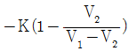
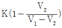
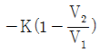
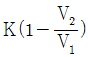
(정답률: 61%)
4. 그림과 같이 비중량이 γ1, γ2, γ3인 세 가지의 유체로 채워진 마노미터에서 A 위치와 B 위치의 압력 차이(PB - PA) 는?
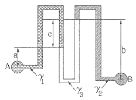
- -aγ1-bγ2+cγ3
- -aγ1+bγ2-cγ3
- aγ1-bγ2-cγ3
- aγ1-bγ2+cγ3
(정답률: 70%)
5. 왕복펌프의 특징으로 옳지 않은 것은?
- 저속운전에 적합하다.
- 같은 유량을 내는 원심펌프에 비하면 일반적으로 대형이다.
- 유량은 적어도 되지마 양정이 원심펌프로 미칠 수 없을 만큼 고압을 요구하는 경우는 왕복펌프가 적합하지 않다.
- 왕복펌프는 양수작용에 따라 분류하면 단동식과 복동식 및 차동식으로 구분된다.
(정답률: 60%)
6. 비중량이 30kN/m3인 물체가 물속에서 줄(lpoe)에 매달려 있다. 줄의 장력이 4kN이라고 할 때 물속에 있는 이 물체의 체적은 얼마인가?
- 0.198m3
- 0.218m3
- 0.225m3
- 0.246m3
(정답률: 41%)
7. 내경 0.⑤m 인 강관 속으로 공기가 흐르고 있다. 한쪽 단면에서의 온도는 293K, 압력은 4atm, 평균유속은 75m/s 였다. 이 관의 하부에는 내경 0.08m 의 강관이 접속되어 있는데 이곳의 옫노는 303K, 압력은 2atm 이라고 하면 이곳에서의 평균유속은 몇 m/s 인가? (단, 공기는 이상기체이고 정상유동이라 간주한다.)
- 14.2
- 60.6
- 92.8
- 397.4
(정답률: 51%)
8. 그림과 같은 덕트에서의 유동이 아음속 유동일 때 속도 및 압력의 유동방향 변화를 옳게 나타낸 것은?
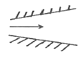
- 속도감소, 압력감소
- 속도증가, 압력증가
- 속도증가, 압력감소
- 속도감소, 압력증가
(정답률: 71%)
9. 관 내 유체의 급격한 압력 강하에 따라 수중에서 기포가 분리되는 현상은?
- 공기바인딩
- 감압화
- 에어리프트
- 캐비테이션
(정답률: 83%)
10. 비중 0.9 인 유체를 10ton/h 의 속도로 20m 높이의 저장탱크에 수송한다. 지름이 일정한 관을 사용할 때 펌프가 유체에 가해 준 일은 몇 kgf·m/kg 인가? (단, 마찰손실은 무시한다.)
- 10
- 20
- 30
- 40
(정답률: 60%)
11. 공기 속을 초음속으로 날아가는 물체의 마하각(Machangle)이 35° 일 때, 그 물체의 속도는 약 몇 m/s 인가? (단, 음속은 340m/s 이다.)
- 581
- 593
- 696
- 900
(정답률: 73%)
12. 다음 면적이 변하는 도관에서의 흐름에 관한 그림이다. 그림에 대한 설명으로 옳지 않은 것은?
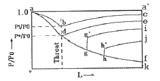
- d점에서의 압력비를 임계압력비라고 한다.
- gg′ 및 hh′ 는 충격파를 나타낸다.
- 선 abc 상의 다른 모든 점에서의 흐름은 아음속이다.
- 초음속인 경우 노즐의 확산부의 단면적이 증가하면 속도는 감소한다.
(정답률: 71%)
13. 지름 5cm 의 관 속을 15cm/s 로 흐르던 물이 지름 10cm 로 급격히 확대되는 관 속으로 흐른다. 이때 확대에 의한 마찰손실 계수는 얼마인가?
- 0.25
- 0.56
- 0.65
- 0.75
(정답률: 46%)
14. 지름이 400mm 인 공업용 강관에 20℃ 의 공기를 264m3/min 로 수송할 때, 길이 200m 에 대한 손실수두는 약 몇 cm 인가? (단, Darcy-Weisbacg 식의 관마찰계수는 0.1 × 10-3 이다.)
- 22
- 37
- 51
- 313
(정답률: 49%)
15. 다음 중 등엔트로피 과정은?
- 가역 단열 과정
- 비가역 등온 과정
- 수축과 확대 과정
- 마찰이 있는 가역적 과정
(정답률: 84%)
16. 유체의 점성과 관련된 설명 중 잘못된 것은?
- poise 는 점도의 단위이다.
- 점도란 흐름에 대한 저항력의 척도이다.
- 동점성 계수는 점도/밀도와 같다.
- 20℃에서 물의 점도는 1 poise 이다.
(정답률: 75%)
17. 단면적이 변화하는 수평 관로에 밀도가 ρ 인 이상유체가 흐르고 있다. 단면적이 A1 인 곳에서의 압력은 P1, 단면적이 A2 이 곳에서의 압력은 P2 이다.
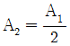
이면 단면적이 A2 인 곳에서의 평균 유속은?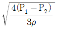
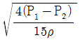
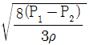
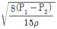
(정답률: 63%)
18. 전단응력(shear stress)과 속도구배와의 관계를 나타낸 다음 그림에서 빙햄플라스틱유체(Bingham plastic fluid)를 나타낸 것은?
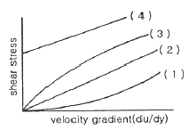
- (1)
- (2)
- (3)
- (4)
(정답률: 68%)
19. 완전발달흐름(fully developed flow)에 대한 내용으로 옳은 것은?
- 속도분포가 축을 따라 변하지 않는 흐름
- 천이영역의 흐름
- 완전난류의 흐름
- 정상상태의 유체흐름
(정답률: 56%)
20. 유체를 연속체로 취급할 수 있는 조건은?
- 유체가 순전히 외력에 의하여 연속적으로 운동을 한다.
- 항상 일정한 전단력을 가진다.
- 비압축성이며 탄성계수가 적다.
- 물체의 특성길이가 분자 간의 평균자유행로보다 훨씬 크다.
(정답률: 62%)
2과목: 연소공학
21. 다음 그림은 카르노 사이클(Carmot cycle)의 과정을 도식으로 나타낸 것이다. 열효율 η를 나타내는 식은?
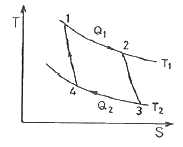
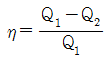
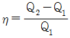
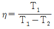
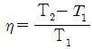
(정답률: 71%)
22. 발열량이 21MJ/kg인 무연탄이 7%의 스분을 포함한다면 무연탄의 발열량은 약 몇 MJ/kg 인가?
- 16.43
- 17.85
- 19.53
- 21.12
(정답률: 59%)
23. 최소 점화에너지에 대한 설명으로 옳은 것은?
- 최소 점화에너지는 유속이 증가할수록 작아진다.
- 최소 점화에너지는 혼합기 온도가 상승함에 따라 작아진다.
- 최소 점화에너지의 상승은 혼합기 온도 및 유속과는 무관하다.
- 최소 점화에너지는 유속 20m/s 까지는 점화에너지가 증가하지 않는다.
(정답률: 66%)
24. 압력 엔탈피 선도에서 등엔트로피 선의 기울기는?
- 부피
- 온도
- 밀도
- 압력
(정답률: 57%)
25. 줄·톰슨 효과를 참조하여 교축과정(throttling process)에서 생기는 현상과 관계없는 것은?
- 엔탈피 불변
- 압력 강하
- 온도 강하
- 엔트로피 불변
(정답률: 71%)
26. 비중이 0.75 인 휘발유(C8H18) 1L를 완전 연소시키는데 필요한 이론산소량은 약 몇 L 인가?
- 1510
- 1842
- 2486
- 2814
(정답률: 51%)
27. 1kmol 의 일산화탄소와 2kmol 의 산소로 충전된 용기가 있다. 연소 전 온도는 298K, 압력은 0.1MPa 이고 연소 후 생성물은 냉각되어 1300K 로 되었다. 정상상태에서 완전 연소가 일어났다고 가정했을 때 열전달량은 약 몇 kJ 인가? (단, 반응물 및 생성물의 총엔탈피는 각각 –11⑤29 kJ, -293338 kJ 이다.)
- -202397
- -230323
- -340238
- -403867
(정답률: 27%)
28. 기체가 168kJ의 열을 흡수하면서 동시에 외부로부터 20kJ의 일을 받으면 내부에너지의 변화는 약 몇 kJ 인가?
- 20
- 148
- 168
- 188
(정답률: 68%)
29. 열화학반응 시 온도변화와 열전도 범위에 비해 속도변화의 전도 범위가 크다는 것을 나타내는 무차원수는?
- 루이스 수(Lewis number)
- 러셀 수(Nesselt number)
- 프란틀 수(Prandtl number)
- 그라쇼프 수(Grashof number)
(정답률: 70%)
30. 산소의 기체상수(R) 값은 약 얼마인가?
- 260 J/kg·K
- 650 J/kg·K
- 910 J/kg·K
- 1074 J/kg·K
(정답률: 74%)
31. 가연성 가스의 폭발범위에 대한 설명으로 옳지 않은 것은?
- 일반적으로 압력이 높을수록 폭발범위가 넓어진다.
- 가연성 혼합가스의 폭발범위는 고압에서는 상압에 비해 훨씬 넓어진다.
- 프로판과 공기의 혼합가스에 불연성가스를 첨가하는 경우 폭발범위는 넓어진다.
- 수소와 공기의 혼합가스는 고온에 있어서는 폭발범위가 상온에 비해 훨씬 넓어진다.
(정답률: 78%)
32. 압력이 1기압이고 과열도가 10℃ 인 수증기의 엔탈피는 약 몇 kcal/kg 인가? (단, 100℃의 물의 증발 잠열이 539 kcal/kg 이고, 물의 비열은 1 kcal/kg·℃, 수증기의 비열은 0.45 kcal/kg·℃, 기준 상태는 0℃ 와 1atm 으로 한다.)
- 539
- 639
- 643.5
- 653.5
(정답률: 51%)
33. 가스의 비열비(k = Cp / Cv)의 값은?
- 항상 1 보다 크다.
- 항상 0 보다 작다.
- 항상 0 이다.
- 항상 1 보다 작다.
(정답률: 79%)
34. 어떤 고체연료의 조성은 탄소 71%, 산소 10%, 수소 3.8%, 황 3%, 수분 3%, 기타 성분 9.2%로 되어 있다. 이 연료의 고위발열량(kcal/kg)은 얼마인가?
- 6698
- 6782
- 7103
- 7398
(정답률: 36%)
35. 다음 중 대기오염 방지기기로 이용되는 것은?
- 링겔만
- 플레임로드
- 레드우드
- 스크러버
(정답률: 74%)
36. 가스 혼합물을 분석한 결과 N2 70%, CO2 15%, O2 11%, CO 4% 의 체적비를 얻었다. 이 혼합물은 10 kPa, 20℃, 0.2m3 인 초기상태로부터 0.1m3으로 실린더 내에서 가역단열 압축할 때 최종 상태의 온도는 약 몇 K 인가? (단, 이 혼합가스의 정적비열은 0.7157 kJ/kg·K 이다.)
- 300
- 380
- 460
- 540
(정답률: 46%)
37. 종합적 안전관리 대상자가 실시하는 가스 안전성평가의 기준에서 정량적 위험성 평가기법에 해당하지 않는 것은?
- FTA(Fault Tree Analyis)
- ETA(Event Tree Analyis)
- CCA(Cause Consequence Analyis)
- HAZOP(Hazard and Operability Studies)
(정답률: 71%)
38. 수소(H2)의 기본특성에 대한 설명 중 틀린 것은?
- 가벼워서 확산하기 쉬우며 작은 틈새로 잘 발산한다.
- 고온, 고압에서 강재 등의 금속을 투과한다.
- 산소 또는 공기와 혼합하여 격렬하게 폭발한다.
- 생물체의 호흡에 필수적이며 연료의 연소에 필요하다.
(정답률: 78%)
39. 다음 보기에서 설명하는 연소 형태로 가장 적절한 것은?
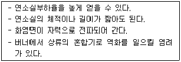
- 증발연소
- 등심연소
- 확산연소
- 예혼합연소
(정답률: 68%)
40. 탄소 1kg을 이론공기량으로 완전 연소시켰을 때 발생되는 연소가스양은 약 몇 Nm3 인가?
- 8.9
- 10.8
- 11.2
- 22.4
(정답률: 43%)
3과목: 가스설비
41. 냉동용 특정설비제조시설에서 발생기란 흡수식 냉동설비에 사용하는 발생기에 관계되는 설계온도가 몇 ℃를 넘는 열교환기 및 이들과 유사한 것을 말하는가?
- 1⑤℃
- 150℃
- 200℃
- 250℃
(정답률: 54%)
42. 아세틸렌에 대한 설명으로 틀린 것은?
- 반응성이 대단히 크고 분해 시 발열 반응을 한다.
- 탄화칼슘에 물을 가하여 만든다.
- 액체 아세틸렌보다 고체 아세틸렌에 안정하다.
- 폭발범위가 넓은 가연성 기체이다.
(정답률: 50%)
43. 스프링 작동식과 비교한 파일럿식 정압기에 대한 설명으로 틀린 것은?
- 오프셋이 적다.
- 1차 압력변화의 영향이 적다.
- 로크업을 적게 할 수 있다.
- 구조 및 신호계통이 단순하다.
(정답률: 62%)
44. 이음매 없는 용기의 제조법 중 이음매 없는 강과을 재료로 사용하는 제조방식은?
- 웰딩식
- 만네스만식
- 에르하르트식
- 딥드로잉식
(정답률: 71%)
45. 신규 용기의 내압시험 시 전증가량이 100cm3 이었다. 이 용기가 검사에 합격하려면 영구증가량은 몇 cm3 이하이어야 하는가?
- 5
- 10
- 15
- 20
(정답률: 73%)
46. 다음 금속재료에 대한 설명으로 틀린 것은?
- 강에 P(인)의 함유량이 많으면 신율, 충격치는 저하된다.
- 18% Cr, 8% Ni을 함유한 강을 18-8 스테인리스강이라 한다.
- 금속가공 중에 생긴 잔류응력을 제거할 때에는 열처리를 한다.
- 구리와 주석의 합금은 황동이고, 구리와 아연의 합금은 청동이다.
(정답률: 74%)
47. 대체천연가스(SNG) 공정에 대한 설명으로 틀린 것은?
- 원료는 각종 탄화수소이다.
- 저온수증기 개질방식을 채택한다.
- 천연가스를 대체할 수 있는 제조가스이다.
- 메탄을 원료로 하여 공기 중에서 부분연소로 수소 및 일산화탄소의 주성분을 만드는 공정이다.
(정답률: 60%)
48. 부식방지 방법에 대한 설명으로 틀린 것은?
- 금속을 피복한다.
- 선택배류기를 접속시킨다.
- 이종의 금속을 접촉시킨다.
- 금속표면의 불균일을 없앤다.
(정답률: 76%)
49. 압력용기라 함은 그 내용물이 액화가스인 경우 35℃에서의 압력 또는 설계압력이 얼마 이상인 용기를 말하는가?
- 0.1 MPa
- 0.2 MPa
- 1 MPa
- 2 MPa
(정답률: 59%)
50. 냄새가 나는 물질(부취제)에 대한 설명으로 틀린 것은?
- D.M.S는 토양투과성이 아주 우수하다.
- T.B.M은 충격(impact)에 가장 약하다.
- T.B.M은 메르캅탄류 중에서 내산화성이 우수하다.
- T.H.T의 LD50은 6400mg/kg 정도로 거의 무해하다.
(정답률: 55%)
51. 펌프에서 송출압력과 송출유량 사이에 주기적이 변동이 일어나는 현상을 무엇이라 하는가?
- 공동 현상
- 수격 현상
- 서징 현상
- 캐비테이션 현상
(정답률: 68%)
52. 다음 중 가스 액화사이클이 아닌 것은?
- 린데 사이클
- 클라우드 사이클
- 필립스 사이클
- 오토 사이클
(정답률: 63%)
53. 35℃에서 최고 충전압력이 15MPa로 충전된 산소용기의 안전밸브가 작동하기 시작하였다면 이때 산소용기 내의 온도는 약 몇 ℃ 인가?
- 137℃
- 142℃
- 150℃
- 165℃
(정답률: 36%)
54. 중간매체 방식의 LNG 기화장치에서 중간 열매체로 사용되는 것은?
- 폐수
- 프로판
- 해수
- 온수
(정답률: 64%)
55. 고압가스 설비의 두께는 상용압력의 몇 배 이상의 압력에서 항복을 일으키지 않아야 하는가?
- 1.5배
- 2배
- 2.5배
- 3배
(정답률: 68%)
56. 다음 보기에서 설명하는 안전밸브의 종류는?
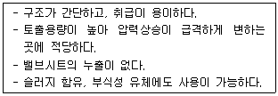
- 가용전식
- 중추식
- 스프링식
- 파열판식
(정답률: 51%)
57. 고온 고압에서 수소가스 설비에 탄소강을 사용하면 수소취성을 일으키게 되므로 이것을 방지하기 위하여 첨가하는 금속 원소로 적당하지 않은 것은?
- 몰리브덴
- 크립톤
- 텅스텐
- 바나듐
(정답률: 63%)
58. 고압식 액화산소 분리장치의 제조과정에 대한 설명으로 옳은 것은?
- 원료공기는 1.5 ~ 2.0 MPa로 압축된다.
- 공기 중의 탄산가스는 실리카겔 등의 흡착제로 제거한다.
- 공기압축기 내부윤활유를 광유로 하고 광유는 건조로에서 제거한다.
- 액체질소와 액화공기는 상부 탑에 이송되나 이때 아세틸렌 흡착기에서 액체공기 중 아세틸렌과 탄화수소가 제거된다.
(정답률: 52%)
59. 펌프의 양수량이 2m3/min 이고 배관에서의 전 손실수두가 5m인 펌프로 20m 위로 양수하고자 할 때 펌프의 축동력은 약 몇 kW 인가? (단, 펌프의 효율은 0.87 이다.)
- 7.4
- 9.4
- 11.4
- 13.4
(정답률: 58%)
60. 고압가스저장시설에서 가연성 가스설비를 수리할 때 가스설비 내를 대기압 이하까지 가스치환을 생략하여도 무방한 경우는?
- 가스설비의 내용적이 3m3 일 때
- 사람이 그 설비의 안에서 작업할 때
- 화기를 사용하는 작업일 때
- 가스켓의 교환 등 경미한 작업을 할 때
(정답률: 68%)
4과목: 가스안전관리
61. 저장탱크에 의한 액화석유가스사용시설에서 배관설비 신축흡수조치 기준에 대한 설명으로 틀린 것은?
- 건축물에 노출하여 설치하는 배관의 분기관의 길이는 30cm 이상으로 한다.
- 분기관에는 90° 엘보 1개 이상을 포 함하는 굴곡부를 설치한다.
- 분기관이 창문을 관통하는 부분에 사용하는 보호관의 내경은 분기관 외경의 1.2배 이상으로 한다.
- 11층 이상 20층 이하 건축물의 배관에는 1개소 이상의 곡관을 설치한다.
(정답률: 43%)
62. 부취제 혼합설비의 이입작업 안전기준에 대한 설명으로 틀린 것은?
- 운반차량으로부터 저장탱크에 이입 시 보호의 및 보안경 등의 보호장비를 착용한 후 작업한다.
- 부취제가 누출될 수 있는 주변에는 방류둑을 설치한다.
- 운반차량은 저장탱크의 외면과 3m 이상 이격거리를 유지한다.
- 이입 작업 시에는 안전관리자가 상주하여 이를 확인한다.
(정답률: 54%)
63. 고압가스 특정제조시설에서 플레어스택의 설치위치 및 높이는 플레어스택 바로 밑의 지표면에 미치는 복사열이 몇 kcal/m2·h 이하로 되도록 하여야 하는가?
- 2000
- 4000
- 6000
- 8000
(정답률: 66%)
64. 저장탱크에 액화석유가스를 충전하려면 정전기를 제거한 후 저장탱크 내용적의 몇 %를 넘지 않도록 충전하여야 하는가?
- 80%
- 85%
- 90%
- 95%
(정답률: 69%)
65. 2개 이상의 탱크를 동일 차량에 고정할 때의 기준으로 틀린 것은?
- 탱크의 주밸브는 1개만 설치한다.
- 충전관에는 긴급 탈압밸브를 설치한다.
- 충전관에는 안전밸브, 압력계를 설치한다.
- 탱크와 차량과의 사이를 단단하게 부착하는 조치를 한다.
(정답률: 73%)
66. 지하에 설치하는 액화석유가스 저장탱크실재료의 규격으로 옳은 것은?
- 설계강도 : 25 MPa 이상
- 물-결합재비 : 25% 이하
- 슬럼프(slump) : 50~150mm
- 굵은 골재의 최대 치수 : 25mm
(정답률: 63%)
67. 독성가스 배관을 2중관으로 하여야 하는 독성가스가 아닌 것은?
- 포스겐
- 염소
- 브롬화메탄
- 산화에틸렌
(정답률: 59%)
68. 고압가스용기의 보관장소에 용기를 보관할 경우의 준수할 사항 중 틀린 것은?
- 충전용기와 잔가스용기는 각각 구분하여 용기보관장소에 놓는다.
- 용기보관장소에는 계량기 등 작업에 필요한 물건 외에는 두지 아니한다.
- 용기보관장소의 주위 2m 이내에는 화기 또는 인화성물질이나 발화성물질을 두지 아니한다.
- 가연성가스 용기보관장소에는 비방폭형 손전등을 사용한다.
(정답률: 74%)
69. 다음 중 특정설비가 아닌 것은?
- 조정기
- 저장탱크
- 안전밸브
- 긴급차단장치
(정답률: 60%)
70. 압축가스의 저장탱크 및 용기 저장능력의 산정식을 옳게 나타낸 것은? (단, Q : 설비의 저장능력[m3], P : 35℃에서의 최고충전압력[MPa], V1 : 설비의 내용적[m3] 이다.)
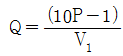
- Q = 1.5 PV1
- Q = (1 – P)V1
- Q = (10P + 1)V1
(정답률: 69%)
71. 액화석유가스에 첨가하는 냄새가 나는 물질의 측정방법이 아닌 것은?
- 오더미터법
- 엣지법
- 주사기법
- 냄새주머니법
(정답률: 65%)
72. 산소, 아세틸렌 및 수소가스를 제조할 경우의 품질검사 방법으로 옳지 않은 것은?
- 검사는 1일 1회 이상 가스제조장에서 실시한다.
- 검사는 안전관리부총괄자가 실시한다.
- 액체산소를 기화시켜 용기에 충전하는 경우에는 품질검사를 아니할 수 있다.
- 검사 결과는 안전관리부총괄자와 안전관리책임자가 함께 확인하고 서명 날인한다.
(정답률: 62%)
73. 고압가스 운반차량에 대한 설명으로 틀린 것은?
- 액화가스를 충전하는 탱크에는 요동을 방지하기 위한 방파판 등을 설치한다.
- 허용농도가 200ppm 이하인 독성가스는 전용차량으로 운반한다.
- 가스운반 중 누출 등 위해 우려가 있는 경우에는 소방서 및 경찰서에 신고한다.
- 질소를 운반하는 차량에는 소화설비를 반드시 휴대하여야 한다.
(정답률: 74%)
74. 동절기에 습도가 낮은 날 아세티렌 용기밸브를 급히 개방할 경우 발생할 가능성이 가장 높은 것은?
- 아세톤 증발
- 역화방지기 고장
- 중합에 의한 폭발
- 정전기에 의한 착화 위험
(정답률: 76%)
75. 일반도시가스사업자 시설의 정압기에 설치되는 안전밸브 분출부의 크기 기준으로 옳은 것은?
- 정압기 입구측 압력이 0.5 MPa 이상인 것은 50A 이상
- 정압기 입구 압력에 관계없이 80A 이상
- 정압기 입구측 압력이 0.5 MPa 미만인 것으로서 설계유량이 1000Nm3/h 이상인 것으로 32A 이상
- 정압기 입구측 압력이 0.5 MPa 미만인 것으로서 설계유량이 1000Nm3/h 미만인 것으로 32A 이상
(정답률: 58%)
76. 가연성 가스를 운반하는 차량의 고정된 탱크에 적재하여 운반하는 경우 비치하여야 하는 분말 소화제는?
- BC용, B-3 이상
- BC용, B-10 이상
- ABC용, B-3 이상
- ABC용, B-10 이상
(정답률: 68%)
77. 장치 운전 중 고압반응기의 플랜지부에서 가연성 가스가 누출되기 시작했을 때 취해야 할 일반적인 대책으로 가장 적절하지 않은 것은?
- 화기 사용 금지
- 일상 점검 및 운전
- 가스 공급의 즉시 정지
- 장치 내를 불활성 가스로 치환
(정답률: 74%)
78. 다음 중 1종 보호시설이 아닌 것은?
- 주택
- 수용능력 300인 이상의 극장
- 국보 제1호인 남대문
- 호텔
(정답률: 72%)
79. 폭발에 대한 설명으로 옳은 것은?
- 폭발은 급격한 압력의 발생 등으로 심한 음을 내며, 팽창하는 현상으로 화학적인 원인으로만 발생한다.
- 발화에는 전기불꽃, 마찰, 정전기 등의 외부 발화원이 반드시 필요하다.
- 최소 발화에너지가 큰 혼합가스는 안전간격이 작다.
- 아세틸렌, 산화에틸렌, 수소는 산소 중에서 폭굉을 발생하기 쉽다.
(정답률: 63%)
80. 내용적 40L의 고압용기에 0℃, 100기압의 산소가 충전되어 있다. 이 가스 4kg을 사용하였다면 전압력은 약 몇 기압(atm)이 되겠는가?
- 20
- 30
- 40
- 50
(정답률: 44%)
5과목: 가스계측기기
81. 가스크로마토그램 분석결과 노르말헵탄의 피크높이가 12.0cm, 반높이선 나비가 0.48cm 이고 벤젠의 피크높이가 9.0cm, 반높이선 나비가 0.62cm 였다면 노르말헵탄의 농도는 얼마인가?
- 49.20%
- 50.79%
- 56.47%
- 77.42%
(정답률: 45%)
82. 온도 25℃ 습공기의 노점온도가 19℃일 때 공기의 상대습도는? (단, 포화 증기압 및 수증기 분압은 각각 23.76mmHg, 16.47mmHg 이다.)
- 69%
- 79%
- 83%
- 89%
(정답률: 49%)
83. 헴펠식 분석법에서 흡수, 분리되는 성분이 아닌 것은?
- CO2
- H2
- CmHn
- O2
(정답률: 71%)
84. 가스미터의 필요 구비조건이 아닌 것은?
- 감도가 예민할 것
- 구조가 간단할 것
- 소형이고 용량이 작을 것
- 정확하게 계량할 수 있을 것
(정답률: 73%)
85. 피스톤형 압력계 중 분동식 압력계에 사용되는 다음 액체 중 약 3000kg/cm2 이상의 고압측정에 사용되는 것은?
- 모빌유
- 스핀들유
- 피자마유
- 경유
(정답률: 64%)
86. 연소식 O2 계에서 산소측정용 촉매로 주로 사용되는 것은?
- 팔라듐
- 탄소
- 구리
- 니켈
(정답률: 55%)
87. 가스미터의 종류별 특징을 연결한 것 중 옳지 않은 것은?
- 습식 가스미터 – 유량 측정이 정확하다.
- 막식 가스미터 – 소용량의 계량에 적합하고 가격이 저렴하다.
- 루트미터 – 대용량의 가스측정에 쓰인다.
- 오리피스 미터 – 유량 측정이 정확하고 압력 손실도 거의 없고 내구성이 좋다.
(정답률: 69%)
88. 가스의 폭발 등 급속한 압력변화를 측정하거나 엔진의 지시계로 사용하는 압력계는?
- 피에즈 전기압력계
- 경사관식 압력계
- 침종식 압력계
- 벨로우즈식 압력계
(정답률: 64%)
89. 다음 중 기본단위는?
- 에너지
- 물질량
- 압력
- 주파수
(정답률: 59%)
90. 가스의 화학반응을 이용한 분석계는?
- 세라믹 O2계
- 가스크로마토그래피
- 오르자트 가스분석계
- 용액전도율식 분석계
(정답률: 60%)
91. 가스크로마토그램에서 A, B 두 성분의 보유시간은 각각 1분 50초와 2분 20초이고 피이크 폭은 다 같이 30초 였다. 이 경우 분리도는 얼마인가?
- 0.5
- 1.0
- 1.5
- 2.0
(정답률: 53%)
92. 막식 가스미터의 선정 시 고려해야 할 사항으로 가장 거리가 먼 것은?
- 사용 최대유량
- 감도유량
- 사용가스의 종류
- 설치 높이
(정답률: 67%)
93. 오프셋(잔류편차)이 있는 제어는?
- I 제어
- P 제어
- D 제어
- PID 제어
(정답률: 68%)
94. 고온, 고압의 액체나 고점도의 부식성액체 저장탱크에 가장 적합한 간접식 액면계는?
- 유리관식
- 방사선식
- 플로트식
- 검척식
(정답률: 63%)
95. 실온 22℃, 습도 45%, 기압 765mmHg 인 공기의 증기 분압(Pw)은 약 몇 mmHg 인가? (단, 공기의 가스 상수는 29.27 kg·m/kg·K, 22℃에서 포화 압력(Ps)은 18.66 mmHg 이다.)
- 4.1
- 8.4
- 14.3
- 16.7
(정답률: 50%)
96. 응답이 목표값에 처음오로 도달하는데 걸리는 시간을 나타내는 것은?
- 상승시간
- 응답시간
- 시간지연
- 오버슈트
(정답률: 56%)
97. 일반적인 열전대 온도계의 종류가 아닌 것은?
- 백금 - 백금·로듐
- 크로멜 - 알루멜
- 철 - 콘스탄탄
- 백금 – 알루멜
(정답률: 69%)
98. 열전대 온도계의 작동 원리는?
- 열기전력
- 전기저항
- 방사에너지
- 압력팽창
(정답률: 78%)
99. 제어계의 과도응답에 대한 설명으로 가장 옳은 것은?
- 입력신호에 대한 출력신호의 시간적 변화이다.
- 입력신호에 대한 출력신호가 목표치보다 크게 나타나는 것이다.
- 입력신호에 대한 출력신호가 목표치보다 작게 나타나는 것이다.
- 입력신호에 대한 출력신호가 과도하게 지연되어 나타나는 것이다.
(정답률: 39%)
100. 적외선 가스분석기의 특징에 대한 설명으로 틀린 것은?
- 선택성이 우수하다.
- 연속분석이 가능하다.
- 측정농도 범위가 넓다.
- 대칭 2원자 분자의 분석에 적합하다.
(정답률: 69%)